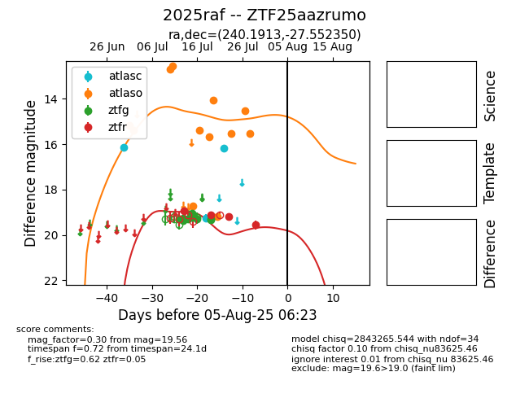

Target 2025raf at 2025-08-05 07:33, see:
FINK: fink-portal.org/2025raf
Lasair: lasair-ztf.lsst.ac.uk/objects/2025raf
ALeRCE: alerce.online/object/2025raf
TNS: wis-tns.org/object/2025raf
YSE: ziggy.ucolick.org/yse/transient_detail/2025raf
alt names
ZTF25aazrumo (ztf,fink)
2025raf (tns,yse)
coordinates:
equatorial (ra, dec) = (240.1913,-27.55235)
galactic (l, b) = (346.4858,+18.89670)
photometry
last atlasc=16.18, atlaso=15.54, ztfg=19.28, ztfr=19.56
3 atlasc, 12 atlaso, 9 ztfg, 4 ztfr detections
